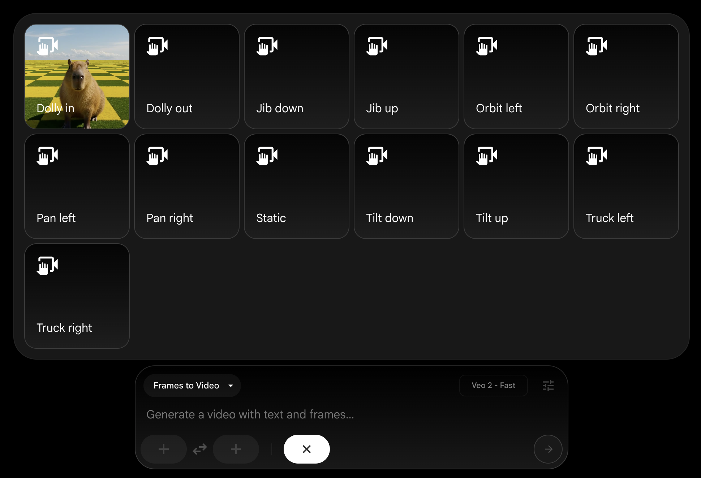

Google apresenta Veo: O futuro da geração de vídeos por IA
O novo modelo cria clipes de alta definição com comandos simples, prometendo revolucionar a indústria cinematográfica e criativa.

Por Redação Tech Paper
O Google DeepMind acaba de elevar o patamar da inteligência artificial generativa com o lançamento do Veo, seu modelo mais avançado para criação de vídeos até o momento. Capaz de gerar clipes em resolução 1080p que ultrapassam um minuto de duração, a nova ferramenta chega para competir diretamente com o Sora, da OpenAI, prometendo uma consistência visual sem precedentes e um entendimento profundo de linguagem cinematográfica.
Domínio da Linguagem Cinematográfica
O grande diferencial do Veo reside na sua capacidade de interpretar termos técnicos de filmagem. Ao solicitar um "timelapse" de uma flor desabrochando ou um "panning" por uma metrópole futurista, a IA não apenas cria o visual, mas simula as leis da física e os movimentos de câmera com precisão profissional. Isso abre portas para que criadores de conteúdo e cineastas possam prototipar cenas complexas em segundos, transformando ideias abstratas em representações visuais quase palpáveis.

Demonstração da interface do modelo Veo.
Imagem tirada de https://zapier.com
Ética e Responsabilidade Digital
Ciente dos desafios que envolvem a criação de vídeos sintéticos, o Google integrou o Veo ao ecossistema do SynthID. Cada vídeo gerado recebe uma marca d'água digital imperceptível, garantindo que o conteúdo possa ser identificado como gerado por inteligência artificial. Além disso, o modelo passou por rigorosos testes de segurança para evitar a criação de conteúdos prejudiciais, reforçando o compromisso da empresa com o desenvolvimento responsável da tecnologia.